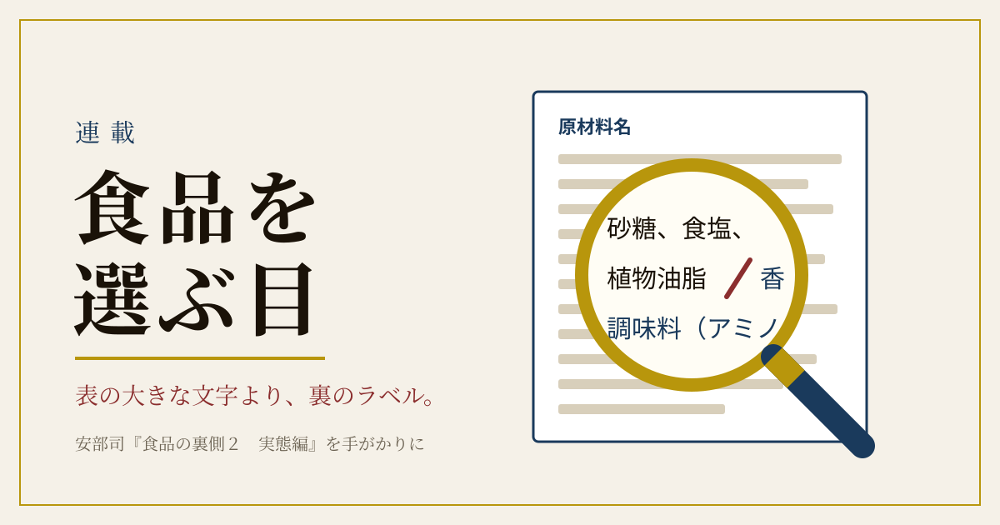

前回は、塩・油・糖の「摂りすぎ」を、栄養成分表示の数字で確かめました。第4回のテーマは、口に入る量はごくわずかなのに、食品の見た目と香りを大きく左右する「着色料」と「香料」です。
手がかりは、本の第4章「限りなくブラックに近い添加物」の後半（同書 113〜121ページ）です。前回の竜田揚げの弁当のラベルにも、「着色料（紅麹、カロテノイド、赤だいこん色素）」と「香料」が並んでいました。あの赤やオレンジの色、食欲をそそる香りは、どこから来ているのでしょうか。
第2回でふれた安部さんの「五つの願い」（安い・簡単・便利・きれい・おいしい）のうち、着色料と香料が叶えるのは「きれい」と「おいしい」です。栄養を増やすわけでも、日持ちをよくするわけでもありません。それでも、色と香りは「これを買おう」と思わせる力をいちばん持っています。
使う量は、驚くほどわずかです。安部さんによれば、合成着色料は500mlのペットボトルを色づけるのに爪楊枝の先ほど、お風呂の湯でも耳かき1杯ほどで足りるといいます（同書 115ページ）。そこで安部さんは、そんな微量でも影響が出るかもしれない、という海外の話から第4章の後半を始めています。
ラベルの書き方も、二つは対照的です。
・着色料：「着色料（紅麹、カロテノイド）」のように、役割の名前と物質の名前を並べて書きます。「赤色102号」「コチニール色素」のように名前に「色」が入っていれば、「着色料」の語は省けます。つまり、何で色をつけたかは、ラベルで分かります。
・香料：第1回で見た「一括名」の一つです。何種類の香りの物質を混ぜていても、「香料」の一語で済みます。つまり、何で香りをつけたかは、ラベルからは分かりません。
色は「読める」、香りは「読めない」。この違いを頭に置いて、先へ進みましょう。
「赤色102号」「黄色4号」のように番号で呼ばれる色は、「タール色素」ともいい、石油から得られる物質をもとに合成されます。日本で食品に使ってよいとされているタール色素は12種類です。生鮮食品などには使えません。
安部さんが紹介するのは、イギリスのサウサンプトン大学の研究です（同書 114ページ）。合成着色料を摂った子どもに多動性の行動が見られたという報告を受けて、EUでは2010年7月から、6種類の着色料のどれかを使った食品に、「子どもの活動や注意力に悪影響を与える可能性があります」という警告の表示が義務になりました。
その6種類のうち、黄色4号、黄色5号、赤色102号、赤色40号の4つは、日本でも使われています。日本では、厚生労働省がイギリスの研究と、それを評価したヨーロッパの機関の見解を審議し、「特段の対応は行わない。新しい知見があれば改めて検討する」としています（2008年）。表示で警告する地域と、そうしない国。同じ研究を見ても、判断は分かれています。
さらに本が出たあと、アメリカが大きく動きました。
・2025年1月、アメリカ食品医薬品局（FDA）は、赤色3号の食品への使用の認可を取り消しました。高い量を与えた雄のラットでがんができた、というデータにもとづくもので、食品では2027年1月までに使えなくなります。
・2025年4月には、石油由来の合成着色料を食品からなくしていく方針を発表し、赤色40号や黄色5号など6種類を2026年末までになくすよう、メーカーに求めました。ただしこれは、法律での禁止ではなく、業界の自主的な取り組みに頼ったものです。
日本では、赤色3号も今のところ使ってよい着色料の一つです。一方で、福岡市の調査では、市民が食品から摂るタール色素の量は、一日に摂ってもよい量（ADI）の0〜1.39％で、安全性に問題はないとされています。「安全の基準の内」と「海外では減らす方向」は、どちらも事実です。どう受け止めるかは、買う側に委ねられています。
番号つきの色がよく使われるのは、紅しょうが、福神漬、たくあん、駄菓子、かき氷のシロップなどです。そうした品のラベルで「○色○号」を探してみると、色を「読む」練習になります。
ハムのピンク、赤い飲み物やお菓子の色によく使われるのが「コチニール色素」です。サボテンなどに寄生するエンジムシ（カイガラムシの仲間）の乾燥体から取り出した赤い色素で、主な成分はカルミン酸です。
天然の色だから安心、と思いがちですが、2012年5月11日、消費者庁はコチニール色素と急性のアレルギー反応（アナフィラキシー）について注意を呼びかけました。化粧品の使用や食品の摂取でアナフィラキシーを起こしたと推定される例が、1960年代から20ほどの論文などで報告されていたのです。原因は色素そのものより、不純物として含まれるたんぱく質だと推定されています。
安部さんは、国内でも、1997年の市立堺病院をはじめ、いくつもの病院や大学から以前から報告があったのに無視されてきた、と厳しく書いています。また、アメリカのスターバックスが、コチニールをやめてトマトから取ったリコピンに切り替えた例も紹介しています（同書 115〜116ページ）。
もう一つ、安部さんは「天然着色料なら安全」とはかぎらない例として、アカネから取った「アカネ色素」が、発がん性があるとして2004年に禁止されたことも挙げています（同書 116ページ）。
ラベルでは、「コチニール色素」「カルミン酸色素」「着色料（コチニール）」「着色料（カルミン酸）」などと書かれます。口紅などの化粧品にも使われています。アレルギーのある方や、食べたあとにかゆみなどが出たことのある方は、この名前を覚えておくと役に立ちます。体の変化を感じたときは、皮膚科やアレルギー科を受診するよう、自治体も呼びかけています。
前回の竜田揚げの弁当のラベルには、「着色料（紅麹、……）」とありました。「紅麹」と聞くと、2024年のサプリメントの健康被害を思い出す方も多いでしょう。
あの問題では、紅麹を配合したサプリメントの原料に、紅麹の培養の段階で青カビが混じったとみられ、その青カビがつくる「プベルル酸」が腎臓の障害を引き起こしていたと、厚生労働省が2024年9月に発表しています。
一方、弁当などに使われるのは「ベニコウジ色素」という着色料です。国（消費者庁・厚生労働省・農林水産省）のQ&Aによれば、問題のサプリの原料は、米に紅麹菌を加えて培養し、加熱・粉砕したものです。ベニコウジ色素は、紅麹菌の培養液から取り出した色素が主成分で、食品添加物としての規格基準に合うものが売られています。つくり方も、使う目的も違う、というのが国の説明です。
同じ「紅麹」の二文字でも、中身は同じとはかぎりません。逆に、名前だけで「危ない」と決めつけるのも、「天然だから安心」と同じくらい、道を誤りやすいのです。なお、安部さんの本では、紅麹色素は「紅麹カビ」を原料に、カニカマや紅色の食品に使われるものとして紹介されています（同書 120ページ）。
果物の絵が描かれ、果物の色と香りがするのに、果汁はほとんど入っていない飲み物があります。色は着色料、香りは香料、甘さは前回見た液糖。果物は「香り」としてだけ入っているのです。
そうした飲み物には、表示の決まりがあります。果汁を使っていないのに、果物の名前の商品名や果物の絵を使ったり、果汁と同じような色や香りをつけたりした場合は、「果汁が入っていない」ことをはっきり書かないと不当表示になります。果汁が5％未満の場合も同じで、「無果汁」または「果汁○％」と書くことになっています。容器のどこかに小さく書いてあるので、探してみてください。
「香料」の一語の奥に何があるのかは、ラベルからは分かりません。そこで第1回のやり方を思い出してください。中身を知ろうとするより、「果汁何％で、香りは香料でつけているのだな」と商品の仕組みを読む。それだけで、果物の絵に惑わされなくなります。
安部さんは、添加物が何からつくられているかを表にまとめています（同書 120ページ、図表4-1）。色とつやに関わるものをいくつか拾います。
・コチニール色素：エンジムシ（カイガラムシの仲間）
・銅クロロフィル（緑の色）：蚕のフン
・紅麹色素：紅麹カビ
・光沢剤（チョコレートのつや）：ラックカイガラムシの分泌物
・酸化チタン（白の色）：金属チタン
安部さんは、出来上がったものだけが安全性の対象で、原料やつくり方は問われない、だからこそ消費者には大事な情報だ、と述べています（同書 121ページ）。原料が虫やフンであること自体は、安全かどうかとは別の話です。それでも、知ったうえで買うかどうかを自分で決める。そのための材料として、覚えておいて損はありません。
添加物は、一つずつ安全性の試験を受け、それに合格したものだけが認められています。安部さんが問うのは、その先です。試験は「一品」ごとの結果にすぎず、10種類、20種類を同時に摂ったときにどうなるかは調べられていない。組み合わせは無限にあるので、実験のしようもない、というのです（同書 118ページ）。
その例として安部さんが挙げるのが、清涼飲料水の「ベンゼン」です。保存料の安息香酸と、酸味料や酸化防止剤として使われるビタミンCが、ある条件で反応してベンゼンができる。これは2006年にイギリスやアメリカで公表され、日本でも厚生労働省が、二つがともに入った清涼飲料水31製品を調べました。そのうち1製品から、水道水の基準値の10ppbを超えるベンゼンが見つかり、回収されています。
これは、「一つずつなら問題のないものが、一緒になると別のものをつくることがある」という、実際に起きた例です。一方で、組み合わせを調べた研究がまったくないわけでもありません。先に見たイギリスの研究も、実は6種類の着色料と保存料の安息香酸ナトリウムを混ぜて与えた、「組み合わせ」の研究でした。
とはいえ、弁当一つにも、ラベルには20種類近い添加物が並んでいました。その組み合わせを一つ一つ調べることは、実際にはできません。安部さんは、全国の子どもたちが毎日のように同じ添加物を摂っていることに、「一抹の不安を抱えずにはいられない」と書いています。
できることは、そう難しくありません。同じような加工品ばかりを毎日続けないことです。弁当の日があっても、次の日は家でごはんを炊く。色のあざやかな飲み物は、ときどきの楽しみにする。組み合わせの影響が分からないものは、「量と回数」で備えるのがいちばん確かです。
1．赤や黄色があざやかな食品は、原材料欄で「着色料（○○）」や「○色○号」を探し、何で色をつけたかを読む。
2．アレルギーのある家族がいれば、「コチニール」「カルミン酸」の名前を覚えておく。
3．果物の絵の飲み物は、「無果汁」「果汁○％」の小さな文字を探す。
4．名前だけで決めつけない。「天然＝安全」も「紅麹＝危ない」も、どちらも言い切れない。
5．同じような加工品が毎日続かないように、一週間の献立で「量と回数」をゆるやかに調える。
「ラベルのこの言葉が分からない」「この食品は本当のところどうなの」といった疑問を、掲載している各ブログのコメント欄にお寄せください。どのブログからいただいた質問も、公的機関の資料や研究にあたって詳しく調べ、このコーナーや番外編でお答えします。
※個別の病気や治療についてのご相談にはお答えできません。かかりつけの医師にご相談ください。
次回（12月4日（金）掲載予定）は「『使用禁止』と『安全』のあいだ」。ある日突然使えなくなる添加物の話から、添加物が認められるまでの仕組みを考えます。
※この記事は書籍や公的機関の資料の紹介で、特定の食品や食事法をすすめたり、避けるよう勧めたりするものではありません。アレルギーのある方は、かかりつけの医師にご相談ください。
記録で確かめられること
・EUでは2010年7月20日から、6種類の着色料（日本で使える黄色4号・黄色5号・赤色102号・赤色40号を含む）を使った食品に、子どもの活動と注意力への影響の可能性を示す警告表示が義務になった（英食品基準庁の発表）。
・日本では厚生労働省が2008年に、この研究とEFSAの評価を踏まえて特段の対応は行わないとした（食品安全委員会の資料）。
・FDAは2025年1月に赤色3号の食品への使用認可を取り消し（食品は2027年1月まで）、同年4月に石油由来の合成着色料を段階的になくす方針を発表した。6種類の2026年末までの除去は業界の自主的な取り組みによる。
・消費者庁は2012年5月11日にコチニール色素とアナフィラキシーについて注意喚起した。原因は不純物のたんぱく質と推定されている（厚生労働省通知）。
・国のQ&Aは、小林製薬の紅麹原材料と他社のベニコウジ色素は製法と使用目的が異なるとしている。健康被害の原因はプベルル酸と厚生労働省が2024年9月に発表した。
・果汁5％未満の飲料で果物の名前や絵を使う場合、「無果汁」または果汁の割合の表示が要る（消費者庁）。
・2006年の厚生労働省の調査で、安息香酸とビタミンCを含む清涼飲料水31製品のうち1製品が10ppbを超え、回収された。
記録からは確かめられないこと
・合成着色料と子どもの多動の関係は、EUと日本で評価が分かれており、因果関係は確定していない。
・安部さんが挙げる国内の病院・大学のコチニールの報告や、「無視されてきた」という評価は、本の記述によるもので、原報告までは確かめていない。
・複数の添加物を同時に摂ったときの影響は、ベンゼンのような個別の例を除いて、ほとんど調べられていない。記録からは「影響がある」とも「ない」とも言えない。
・FDAの合成着色料の段階的廃止は、2026年11月時点でどこまで進んだかを、この記事では確かめていない。
牧正人史先生が昭和三十三年に発見された姓名科学の体系を、デジタルの形で遺す仕事を続けています。
▶ 姓名科学の殿堂へ ▶ お名前を解析する